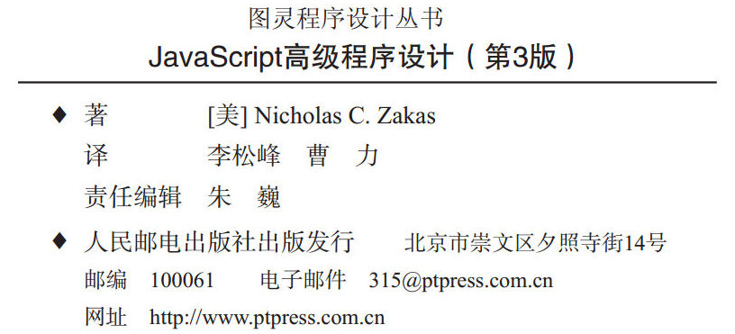

从驱动全球商业、贸易及管理领域不计其数的复杂应用程序的角度来看，说 JavaScript 已经成为当今世界上最流行的编程语言一点儿都不为过。
JavaScript 是一种非常松散的面向对象语言，也是 Web 开发中极受欢迎的一门语言。 JavaScript，尽管它的语法和编程风格与 Java 都很相似，但它却不是 Java 的“轻量级”版本，甚至与 Java 没有任何关系。 JavaScript 是一种全新的动态语言，它植根于全球数亿网民都在使用的 Web 浏览器之中，致力于增强网站和 Web 应用程序的交互性。
在本书中，我们将对 JavaScript 追根溯源，从它在最早的 Netscape 浏览器中诞生谈起，一直谈到今天的它对 DOM 和 Ajax 的强大支持。读者将通过本书掌握如何运用和扩展这门语言，从而更好地满足自己的需求，以及如何实现客户端与服务器的无缝通信，而又不必求助于 Java 或隐藏的网页框架（frame元素）。一言以蔽之，本书将教会你在面对各种常见的 Web 开发问题时，如何拿出自己的 JavaScript 解决方案。
① 本书中文版《JavaScript 入门经典（第 3 版）》已经由清华大学出版社出版。——译者注（以下脚注如无特殊说明，均为译者注）
本书提供了 JavaScript 开发人员必须掌握的内容，全面涵盖了 JavaScript 的各种高级、有用的特性。
本书首先介绍了 JavaScript 的起源及其发展现状，随后讨论了构成 JavaScript 实现的各个组成部分，重点讲解了 ECMAScript 和 DOM 标准。此外，还对不同 Web 浏览器的 JavaScript 实现之间存在的差异，给出了相应的说明。
在此基础上，本书从讲解 JavaScript 的基本概念入手，探讨了 JavaScript 面向对象程序设计和继承的方式，以及如何在 HTML 等标记语言中使用它。在深入剖析了事件和事件处理之后，又解释了各种浏览器检测技术。本书还探讨了 HTML5、 Selectors API 和 File API 等一系列新 API。
本书最后一部分专门讨论了高级主题，涉及性能和内存优化、最佳实践以及对 JavaScript 未来的展望。
第 1 章“ JavaScript 简介”，讲述了 JavaScript 的起源：因何而生，如何发展，现状如何。涉及的概念主要有 JavaScript 与 ECMAScript 之间的关系、 DOM（Document Object Model，文档对象模型）、BOM（Browser Object Model，浏览器对象模型）。此外，还将讨论 ECMA（European ComputerManufacturer’s Association，欧洲计算机制造商协会）和 W3C（World Wide Web Consortium，万维网联盟）制定的一些相关标准。
第 2 章“在 HTML 中使用 JavaScript”，介绍了如何在 HTML 中使用 JavaScript 创建动态网页。这一章不仅展示了在网页中嵌入 JavaScript 的各种方式，还讨论了 JavaScript 内容类型（content-type）及其与<script>元素的关系。第 3 章“基本概念”，讨论了 JavaScript 语言的基本概念，包括语法和流控制语句。这一章也分析了 JavaScript 与其他基于 C 的语言在语法上的相同和不同之处，还介绍了与内置操作符有关的类型转换问题。
第 4 章“变量、作用域和内存问题”，探讨了 JavaScript 如何处理其松散类型的变量。这一章还讨论了原始值和引用值之间的差别，以及与变量有关的执行环境的相应内容。最后，通过介绍 JavaScript的垃圾收集机制，解释了变量在退出作用域时释放其内存的问题。
第 5 章“引用类型”，详尽介绍了 JavaScript 内置的所有引用类型，如 Object 和 Array。这一章对 ECMA-262 规范中描述的每一种引用类型既做了理论上的阐释，又从浏览器实现的角度给出了介绍。
第 6 章“面向对象的程序设计”，讲述了在 JavaScript 中如何实现面向对象的程序设计。由于JavaScript 没有类的概念，因此这一章从对象创建和继承的层面上展示了一些流行的技术。此外，这一章还讲解了函数原型的概念，并对函数原型与整个面向对象方法的关系进行了探讨。
第 7 章“函数表达式”，集中介绍了 JavaScript 中最为强大的一个特性——函数表达式。相关的内容涉及闭包、 this 对象的角色、模块模式和创建私有对象成员等。
第 8 章“ BOM”，介绍 BOM（Browser Object Model，浏览器对象模型），即负责处理与浏览器自身有关的交互操作的对象集合。这一章全面介绍了每一个 BOM 对象，包括 window、 document、location、 navigator 和 screen。
第 9 章“客户端检测”，讨论了检测客户端机器及其支持特性的各种手段，包括特性检测及用户代理字符串检测的不同技术。这一章还就每种手段的优缺点及适用情形给出了详细说明。
第 10 章“ DOM”，介绍 DOM （Document Object Model，文档对象模型），即 DOM1 规定的 JavaScript中的 DOM 对象。这一章也简要介绍了 XML 及其与 DOM 的关系，为深入探讨所有 DOM 规范及其定义的操作网页的方式奠定了基础。
第 11 章“ DOM 扩展”，介绍了其他 API 以及浏览器本身为 DOM 添加的各种功能。涉及内容包括Selectors API、 Element Traversal API 和 HTML5 扩展。
第 12 章“ DOM2 和 DOM3”，在前两章的基础上继续探讨了 DOM2 和 DOM3 中新增的 DOM 属性、方法和对象。这一章还讨论了 IE 与其他浏览器的兼容性问题。
第 13 章“事件”，解释了 JavaScript 中事件的本质，对遗留机制的支持，以及 DOM 对事件机制的重新定义。这一章讨论了多种设备，包括 Wii 和 iPhone。
第 14 章“表单脚本”，讲述如何使用 JavaScript 增强表单的交互性，突破浏览器的局限性。这一章的讨论主要围绕单个表单元素如文本框、选择框，以及围绕数据验证和操作展开。
第 15 章“使用 Canvas 绘图”，讨论了<canvas>标签以及如何通过它来动态绘图。不仅涵盖 2D上下文，也将讨论 WebGL（3D）上下文，可以为创建动画和游戏夯实基础。
第 16 章“ HTML5 脚本编程”，介绍了 HTML5 规定的 JavaScript API，涉及跨文档传递消息、拖放 API 和以编程方式控制<audio>和<video>元素，以及管理历史状态。
第 17 章“错误处理与调试”，讨论浏览器如何处理 JavaScript 代码错误，并展示了一些处理错误的方式。这一章针对每种浏览器分别讨论了相应的调试工具和技术，还给出了简化调试工作的建议。
第 18 章“ JavaScript 与 XML”，展示了 JavaScript 中用于读取和操作 XML（eXtensible MarkupLanguage，可扩展标记语言）的特性。这一章分析了不同浏览器提供的 XML 支持和对象的差异，给出了编写跨浏览器代码的简易方法。此外，这一章还介绍了用于在客户端转换 XML数据的 XSLT （eXtensibleStylesheet LanguageTransformations，可扩展样式表语言转换）技术。
第 19 章“ E4X”，讨论了 E4X（ECMAScript for XML， ECMAScript 中的 XML 扩展） ；设计 E4X 的出发点是简化 XML 处理任务。这一章探讨了在处理 XML 时，使用 E4X 与使用 DOM 相比有哪些优势。
第 20 章“ JSON”，介绍了作为 XML 替代格式的 JSON，包含浏览器原生支持的 JSON 解析和序列化，以及使用 JSON 时要注意的安全问题。
第 21 章“ Ajax 与 Comet”，讲解了常用的 Ajax 技术，包括使用 XMLHttpRequest 对象及 CORS（Cross-Origin Resource Sharing，跨来源资源共享） API 实现跨域 Ajax 通信。这一章展示了浏览器在实现与支持方面存在的差异，同时也给出了一些使用建议。
第 22 章“高级技巧”，深入讲解了一些 JavaScript 中较复杂的模式，包括函数柯里化（currying）、部分函数应用和动态函数。这一章还讨论了如何创建自定义的事件框架和使用 ECMAScript 5 创建防篡改对象。
第 23 章“离线应用与客户端存储”，讨论了如何检测应用离线以及在客户端机器中存储数据的各种技术。先从受到最广泛支持的特性 cookie 谈起，继而介绍了新兴的客户端存储技术，如 Web Storage和 IndexedDB。
第 24 章“最佳实践”，探讨了在企业级环境中使用 JavaScript 的各种方式。其中，着眼于提高可维护性的内容包括编码技巧、格式化和通用编程实践。这一章还介绍了改善代码执行性能及速度优化的一些技术。最后讨论了部署问题，包括如何创建构建过程。
第 25 章“新兴的 API”，介绍了为增强浏览器中的 JavaScript 而创建的新 API。虽然这些 API 还没有得到完整或全面的支持，但它们已经崭露头角，有些浏览器也已经部分地实现了这些 API。这一章的内容主要是 Web 计时和文件 API。
cvxw
图灵社区会员 StinkBC(StinkBC@gmail.com) 专享 尊重版权
